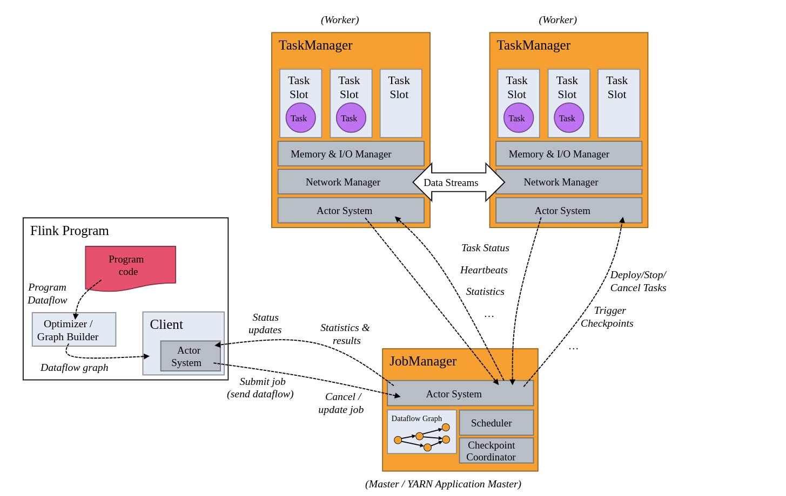
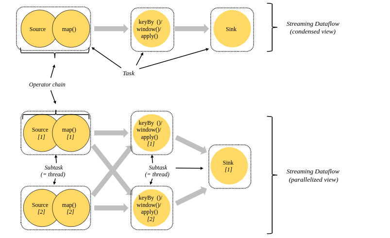
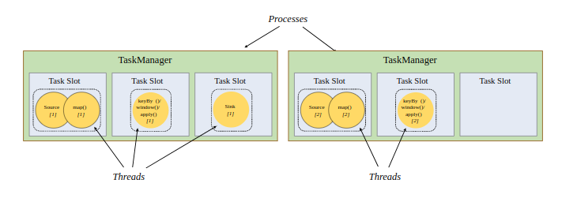
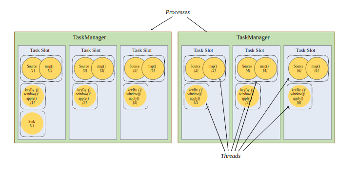

Ch01-Flink 之 介绍
November 1, 2020
Apache Flink 是 Apache 基金会旗下的一个开源大数据处理框架。应用于分布式、高性能、高可用的数据流应用程序。可以处理有限数据流和无限数据流，即能够处理有边界和无边界的数据流。
1. 基本信息 #
| 条目 | 说明 |
|---|---|
| 官网 | https://flink.apache.org/ |
| 下载地址 | https://flink.apache.org/downloads.html |
2. 架构介绍 #
当 Flink 集群启动后，首先会启动一个 JobManger 和一个或多个的 TaskManager。由 Client 提交任务给 JobManager，JobManager 再调度任务到各个 TaskManager 去执行，然后 TaskManager 将心跳和统计信息汇报给 JobManager。TaskManager 之间以流的形式进行数据的传输。上述三者均为独立的 JVM 进程。

2.1 Client #
Client 不是运行时和程序执行的一部分，而是用于准备数据流并将其发送给 JobManager。之后，客户端可以断开连接（分离模式），或保持连接来接收进程报告（附加模式）。客户端可以作为触发执行 Java/Scala 程序的一部分运行，也可以在命令行进程 ./bin/flink run 中运行。
2.2 JobManager #
JobManager 具有许多与协调 Flink 应用程序的分布式执行有关的职责：它决定何时调度下一个 task（或一组 task）、对完成的 task 或执行失败做出反应、协调 checkpoint、并且协调从失败中恢复等等。这个进程由三个不同的组件组成：ResourceManager, Dispatcher, JobMaster。
2.2.1 ResourceManager #
ResourceManager 负责 Flink 集群中的资源提供、回收、分配 - 它管理 task slots，这是 Flink 集群中资源调度的单位（请参考 TaskManagers）。Flink 为不同的环境和资源提供者（例如 YARN、Mesos、Kubernetes 和 standalone 部署）实现了对应的 ResourceManager。在 standalone 设置中，ResourceManager 只能分配可用 TaskManager 的 slots，而不能自行启动新的 TaskManager。
2.2.2 Dispatcher #
Dispatcher 提供了一个 REST 接口，用来提交 Flink 应用程序执行，并为每个提交的作业启动一个新的 JobMaster。它还运行 Flink WebUI 用来提供作业执行信息。
2.2.3 JobMaster #
JobMaster 负责管理单个 JobGraph 的执行。Flink 集群中可以同时运行多个作业，每个作业都有自己的 JobMaster。
始终至少有一个 JobManager。高可用（HA）设置中可能有多个 JobManager，其中一个始终是 leader，其他的则是 standby（请参考 高可用（HA））。
2.3 TaskManagers #
TaskManager（也称为 worker）执行作业流的 task，并且缓存和交换数据流。
必须始终至少有一个 TaskManager。在 TaskManager 中资源调度的最小单位是 task slot。TaskManager 中 task slot 的数量表示并发处理 task 的数量。请注意一个 task slot 中可以执行多个算子。
3. Tasks #
3.1 Tasks and Operator Chains #
在 Flink 中，并行度相同的一对一（one to one）算子操作，可以直接链接在一起形成一个“大”的任务（task），这样原来的算子就成为了真正任务里的一部分。每个 task 会被一个线程执行，这样的技术被称为“算子链”（Operator Chain）。将算子链接成 task 是个有用的优化：它减少线程间切换、缓冲的开销，并且减少延迟的同时增加整体吞吐量。Operator Chains 行为是可以配置的。

上图中样例数据流用 5 个 subtask 执行，因此有 5 个并行线程。
数据流在算子之间传输数据的形式可以是一对一（one-to-one）的直通 (forwarding) 模式，也可以是打乱的重分区（redistributing）模式，具体是哪一种形式，取决于算子的种类。
- One-to-one，forwarding：该模式下数据流维护着分区以及元素的顺序，map、filter、flatMap 等算子都是这种关系。
- Redistributing：该模式下数据流的分区会发生改变，keyBy、window 等算子都是这种关系。
3.2 Task Slots and Resources #
每个 worker（TaskManager）都是一个 JVM 进程，可以在单独的线程中执行一个或多个 subtask。为了控制一个 TaskManager 中接受多少个 task，就有了所谓的 task slots（至少一个）。
每个 task slot 代表 TaskManager 中资源的固定子集。例如，具有 3 个 slot 的 TaskManager，会将其托管内存 1/3 用于每个 slot。分配资源意味着 subtask 不会与其他作业的 subtask 竞争托管内存，而是具有一定数量的保留托管内存。注意此处没有 CPU 隔离；当前 slot 仅分离 task 的托管内存。
通过调整 task slot 的数量，用户可以定义 subtask 如何互相隔离。每个 TaskManager 有一个 slot，这意味着每个 task 组都在单独的 JVM 中运行（例如，可以在单独的容器中启动）。具有多个 slot 意味着更多 subtask 共享同一 JVM。同一 JVM 中的 task 共享 TCP 连接（通过多路复用）和心跳信息。它们还可以共享数据集和数据结构，从而减少了每个 task 的开销。

默认情况下，Flink 允许 subtask 共享 slot，即便它们是不同的 task 的 subtask，只要是来自于同一作业即可。结果就是一个 slot 可以持有整个作业管道。

允许 slot 共享有两个主要优点：
- Flink 集群所需的 task slot 和作业中使用的最大并行度恰好一样。无需计算程序总共包含多少个 task（具有不同并行度）。
- 容易获得更好的资源利用。如果没有 slot 共享，非密集 subtask（source/map()）将阻塞和密集型 subtask（window）一样多的资源。通过 slot 共享，我们示例中的基本并行度从 2 增加到 6，可以充分利用分配的资源，同时确保繁重的 subtask 在 TaskManager 之间公平分配。
3.3 Task 划分原则 #
Flink 中称为任务链优化技术，它要求并行度相同、并且是 one-to-one 操作。这样就可以将该 operator 划分到同一个 task 中。